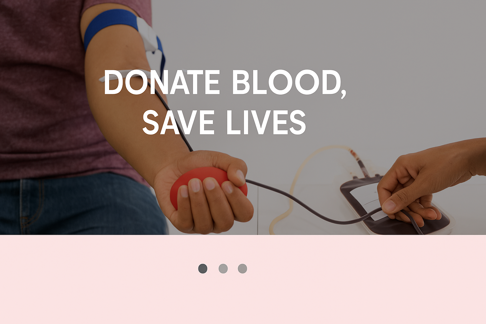
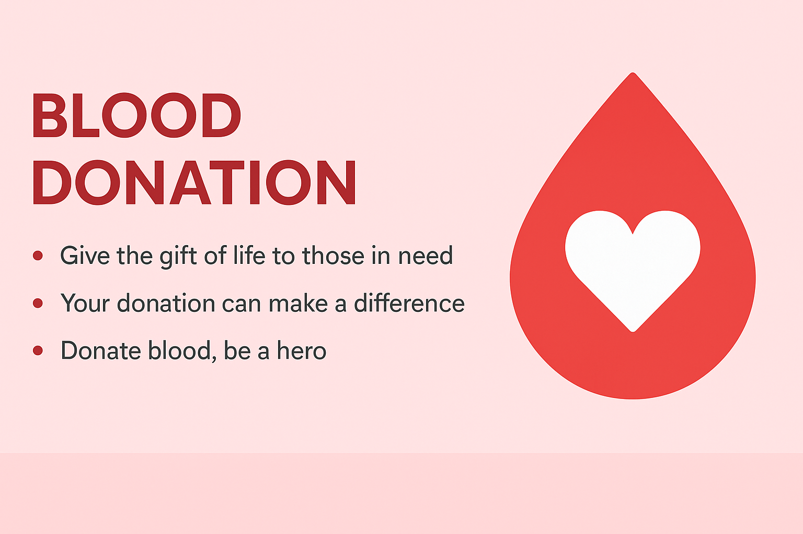
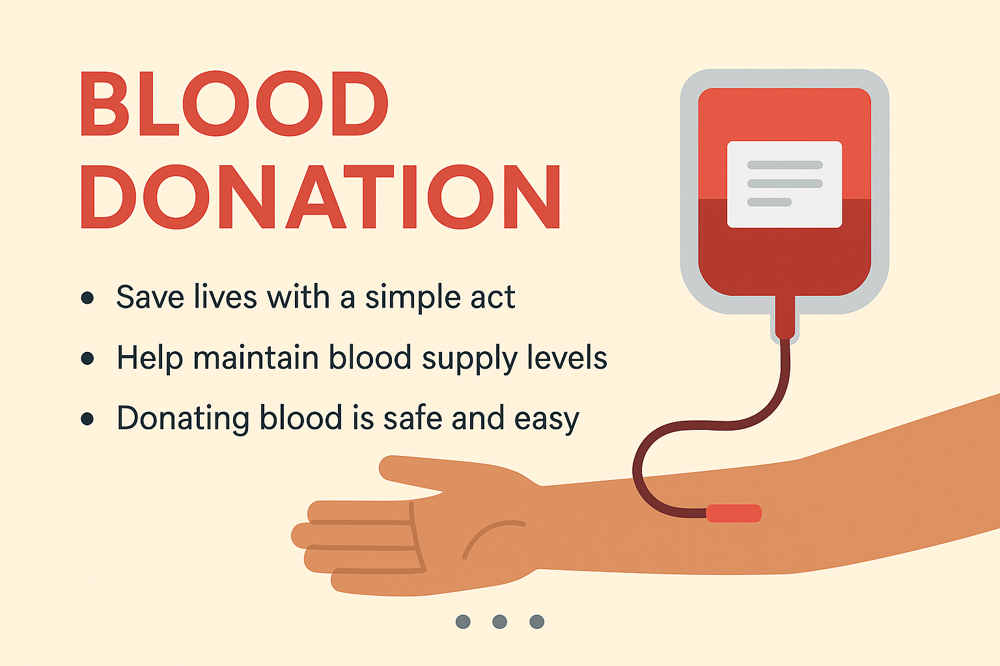

LifeLine Connect
Register
Login

Donate Blood, Save Lives

Give the Gift of Life

Be a Hero
❮
❯
Connect, Donate, Save Lives
LifeLine Connect helps link blood donors and recipients, streamlining the process and saving lives.
Start for Free
Key Features and Benefits
For Donors
Easy registration and profile management.
Search and connect with recipients directly.
Schedule and manage your donations.
Receive notifications for urgent blood requests.
For Recipients
Quickly find available donors in your area.
Post blood requests with specific requirements.
Connect with donors directly.
Track the status of your requests.